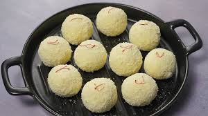

🍬 Kacha Golla

Ingredients
- 1 liter full cream milk
- 1/2 tsp lemon juice or vinegar
- 1/2 cup sugar
- 1/2 tsp cardamom powder
- 1 tbsp ghee (clarified butter)
- Chopped pistachios and cashews for garnish
Instructions
- Boil the milk in a heavy-bottomed pan and reduce it to half its quantity, stirring continuously.
- Once the milk starts to thicken, add lemon juice or vinegar to curdle it. Stir gently until the curds separate from the whey.
- Drain the whey and keep the curds (chhena) aside. Allow it to cool for a few minutes.
- Heat ghee in a pan. Add the chhena and cook on low heat, stirring continuously, until it thickens and becomes soft.
- Add sugar and cardamom powder, and cook further until the mixture becomes a sticky dough-like consistency.
- Once the mixture is ready, shape it into small balls or oval shapes (Golla).
- Garnish with chopped pistachios and cashews.
Serve With
- Serve Kacha Golla as a sweet dessert or enjoy it with your tea.
💡 Tip: You can also soak the Kacha Golla in sugar syrup for extra sweetness.